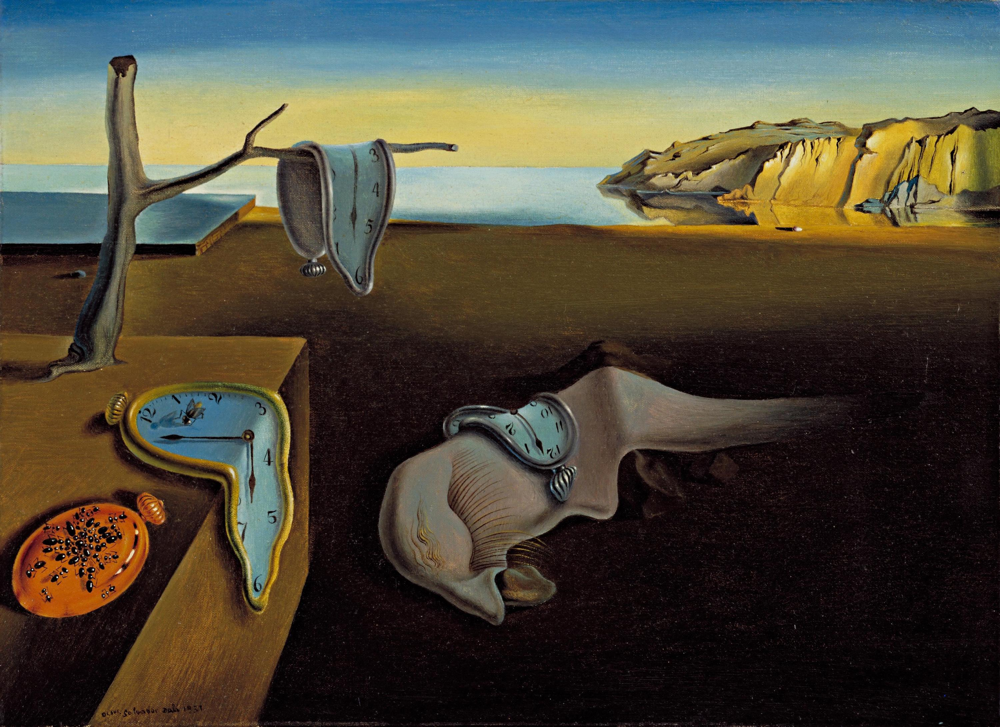
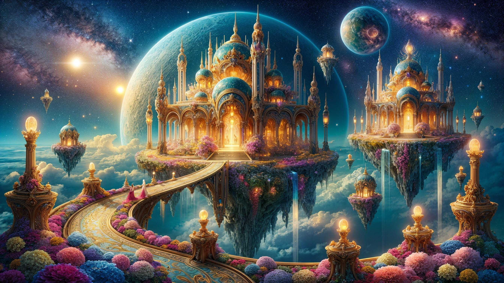
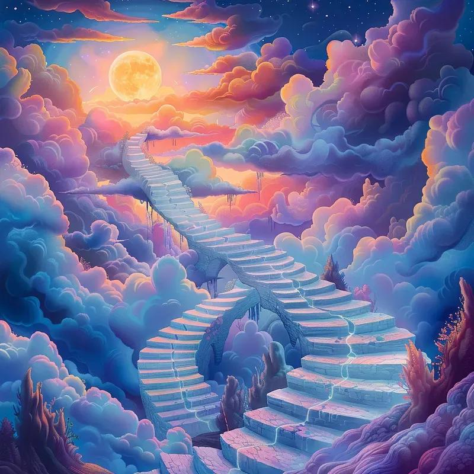

ENTER THE WORLD OF IMAGINATION
الفن السريالي
حين تتحول الأحلام إلى لوحات!
ما هو الفن السريالي؟
الفن السريالي هو اتجاه فني يستكشف عالم الأحلام والخيال واللاوعي، ويجمع بين عناصر غير متوقعة ليصنع مشاهد غريبة ومثيرة للدهشة. فهو يحرر الفنان من قيود الواقع، ويمنحه الفرصة للتعبير عن أفكاره بطريقة غير تقليدية.
رواد الفن السريالي
سلفادور دالي
اشتهر بلوحاته الغريبة والساعات الذائبة.
رينيه ماغريت
استخدم الأشياء اليومية في مشاهد غير مألوفة.
ماكس إرنست
قدم أعمالًا فنية مليئة بالخيال والتجريب.
معرض الأحلام
اكتشفي كيف يرى الفنانون العالم بعين الخيال.

عالم الأحلام
لوحة تأخذنا إلى عالم يتجاوز حدود الواقع والخيال.

الخيال بلا حدود
مشاهد غير مألوفة تجعلنا نرى العالم بطريقة مختلفة.

ما وراء الواقع
رحلة فنية تمزج بين الغموض والإبداع والدهشة.